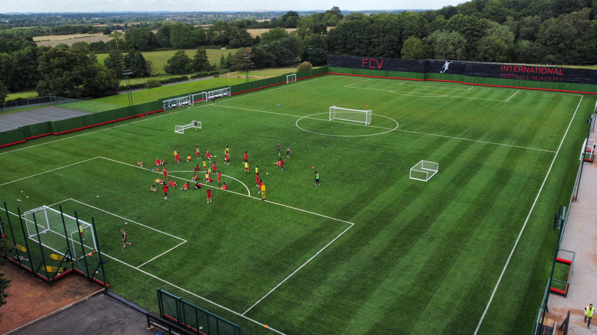
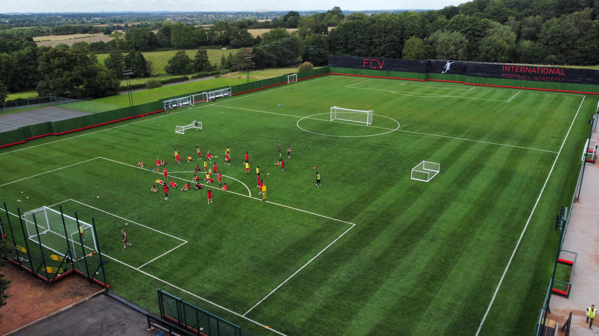

Fivestars playground location

 

Football coaching phases include:
Ball Mastery
Ball Mastery enables our players to develop a healthy, confident relationship with the ball. Players will focus on using different parts of their feet and executing different turns, forward moves and side moves.
Creating & Finishing
Creating & Finishing requires players to take risks, express themselves, and to be brave in these situations. We will introduce and encourage our players to adopt this mindset and how we can score using different methods such as 1st time finishes, aerial finishes, and placed/finessed finishes..
Passing & Receiving
Passing & Receiving is a key technical component of the modern game. We will introduce various methods to pass to teammates and receive on different angles and parts of the foot in an array of game realistic situations. Our players will be coached to break lines, switch play, and combine using different passing and receiving techniques.
Counter Press
Attempts by a team to regain possession immediately after losing it. This usually takes place in the attacking third/half of the pitch. Counter-pressing is also known as gegenpressing, with its origins in Germany.
Channel
The space in between and behind a full-back and their nearest centre-back. There are two channels at each end of the pitch (right and left), which a pass or run may be made into. The space between the opposition's defensive and midfield lines wide of the centre of the pitch.